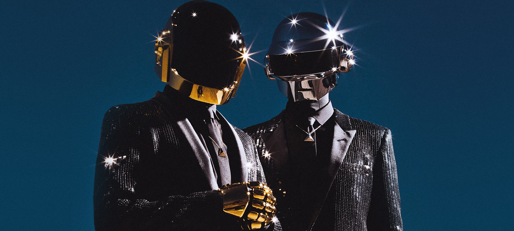

Daft Punk were a French electronic music duo formed in 1993 in Paris by Guy-Manuel de Homem-Christo and Thomas Bangalter. Widely regarded as one of the most influential acts in dance music history, they achieved popularity in the late 1990s as part of the French house movement. They garnered critical acclaim and commercial success in the years following, combining elements of house music with funk, techno, disco, indie rock and pop. After Bangalter and Homem-Christo's indie rock band Darlin' disbanded, they began experimenting with drum machines and synthesisers. Their debut studio album Homework was released by Virgin Records in 1997 to positive reviews, backed by singles "Around the World" and "Da Funk". From 1999, they assumed robot personas with helmets, outfits and gloves for public appearances to preserve their identities; they made few media appearances.[1] They were managed from 1996 to 2008 by Pedro Winter, the head of Ed Banger Records.
Daft Punk's second album, Discovery (2001), had further success, supported by hit singles "One More Time", "Digital Love" and "Harder, Better, Faster, Stronger". The album became the basis for an animated film, Interstella 5555, supervised by a Japanese animator Leiji Matsumoto. Daft Punk's third album, Human After All (2005), received mixed reviews, though the singles "Robot Rock" and "Technologic" achieved success in the United Kingdom. The duo directed their first film, Electroma, an avant-garde science fiction film, in 2006. They toured throughout 2006 and 2007 and released the live album Alive 2007, which won a Grammy Award for Best Electronic/Dance Album; the tour is credited for popularising dance music in North America. Daft Punk composed the score for the 2010 film Tron: Legacy.